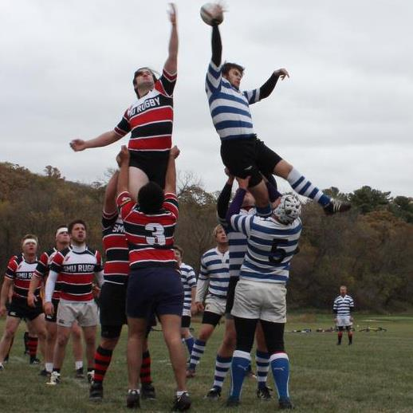

Rugby

This page is about rugby and Jake Albee
Personal History
I grew up knowing that my dad played rugby ('75-'79) at Luther which has always left me wondering whether or not I would like it. I arrived at Luther
in the fall of 2011 and attended the activity fair as many other freshman do. I was drawn to the table by none other than a certain Chris Jones. He brought me
into the rugby family and showed me how the team is a tight knit family. This team became my closest friends. I have played every possible match and started
since I was a freshman. I believe I will be around helping the team for many years to come. Rugby has become a Luther tradition for my family as my father
played when he was here and my mother, who also attended Luther, was always there to cheer him on at rugby matches. I hope to continue this if at all possible.
Luther and Rugby
Rugby at Luther restarted in 1971. My freshman year of college (2011) was the 40th anniversary of the rugby team. the Luther College Rugby Football Club (LCRFC)
has won many tournaments over the years and is well known and well liked across the Midwest. We have most recently took second place in our division's league play.
The rugby program at Luther is even older than the Iowa Rugby Union. It has seen many great players and has produced some national level players as well.
It will continue to create memories for its players for many years to come.
General Rugby History
Under Construction
Navigation